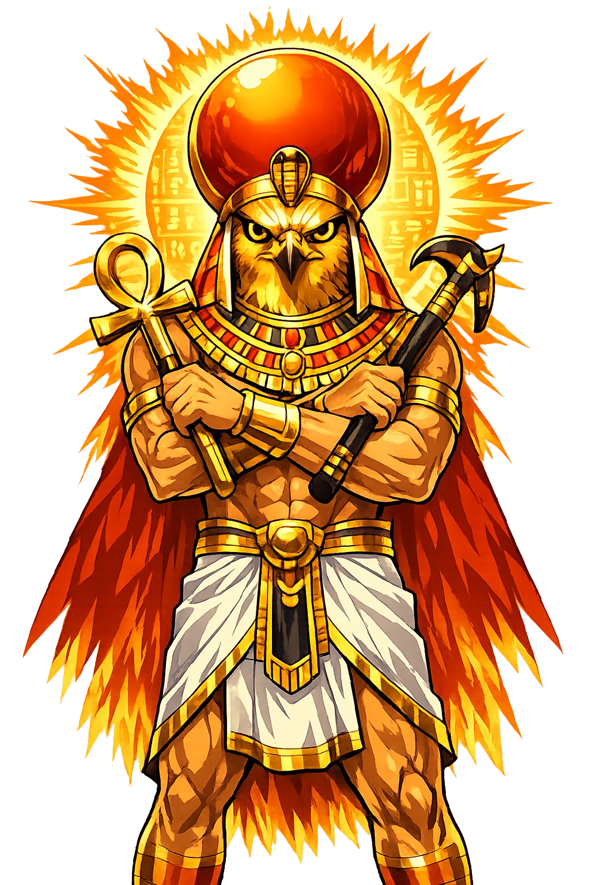

The Authentic Orthography
Soul, Afterlife, Transfiguration · The Luminous Spirit

Unicode restoration and ASCII comparison
𓅜𓏤
The name in its original Egyptian form. Ꜣḫ (𓅜𓏤) is attested in the source tradition — “Akh, transfigured spirit; effective, luminous being. One of the highest forms of the soul”. Its original diacritics and script distinctions carry the full phonetic and orthographic weight of the source tradition.
akh
Reduced to plain akh, the name loses everything that made it specific: original diacritics and script distinctions. What remains is an ASCII string that machines can parse but that no longer speaks with its original voice.
Ꜣḫ
The Unicode restoration recovers what ASCII flattened. Ꜣḫ restores original diacritics and script distinctions, returning the name to its original written dignity. The domain encodes to Punycode, but the browser displays the truth.
Ꜣḫ.com → xn--9gg9559c.com
The non-ASCII characters in Ꜣḫ are encoded while the ASCII remains visible. To the DNS, it is Punycode. To humanity, it is Ꜣḫ.
How Ꜣḫ travels from ancient script to the modern URL
Egyptian Ꜣḫ “transfigured spirit, effective one"; one of the highest forms of the soul in Egyptian anthropology.
Soul, Afterlife, Transfiguration
The Unicode restoration Ꜣḫ uses Egyptological characters registrable in .com; hieroglyphs are outside the .com IDN table.
How Ꜣḫ was spoken
The domain of Ꜣḫ
In the egyptian tradition, Ꜣḫ governed soul, afterlife, transfiguration. The name encodes a sphere of power that shaped ritual, narrative, and social order.
The akh is the justified dead made luminous and effective, a being of light who can move among gods and mortals.
Royal utterances promise that the king will ascend to the sky as an akh and join the circumpolar stars.
This spell protects the akh from being taken away and reunites it with its body in the realm of the dead.
The living wrote to the akh by name, asking it to heal, judge, or appear in dreams as an active ancestor.
Stories of Ꜣḫ
The Ꜣḫ is the Egyptian self made effective. After death, once the ba has flown and the ka has been fed, once the heart has been weighed and found true, the justified dead becomes an akh—a luminous, potent spirit capable of speech, movement, and influence among gods and mortals. No longer merely a soul in pieces, the akh is the completed person, transfigured into a being of light and power who can travel freely through the Duat and even return to the world of the living. Egyptian letters to the dead address the akh by name, asking it to appear in dreams, heal the sick, or settle family disputes, treating the transfigured dead as an active member of the household rather than a distant memory. The transformation into an akh was not automatic; it required correct burial, continued offerings, and the successful navigation of the underworld. Magical spells therefore protected the akh from gatekeepers, demons, and the second death. In this theology, a name correctly spoken and a body correctly preserved were the twin guarantees of eternal agency.
In the Pyramid Texts, the oldest corpus of Egyptian religious literature, the king is repeatedly assured that he will ascend to the sky as an akh. Utterance 263 declares that he goes “as an akh, as lord of the horizon,” joining Re in his solar barque and taking his place among the circumpolar stars. The transformation is not automatic; it is won through ritual, through the correct utterance of spells, and through the king's identification with Osiris, whose own death and reconstitution provide the template for every akh's triumph over decay.
The Book of the Dead treats akh-hood as the corpus's goal-state. Spell 97 exists “for causing a man to be an akh in the realm of the dead”; Spell 130 gathers the disparate parts of the deceased's being into an effective akh with an eternal ba; and the rubrics of Spells 133 and 136A are “for making a spirit excellent” — in Egyptian, sꜣḫ, the causative of the very word ꜣḫ.
Precision matters at the edges: the celebrated Spell 89, with its vignette of the human-headed bird hovering over the mummy, is “for causing the ba to be united to its body in the realm of the dead” — the reunion of the ba with the corpse, the precondition of transfiguration rather than the state itself. Amulets, inscribed coffins, and tomb stelae were deployed to make the akh permanent, effective, and safe—a luminous identity no longer dependent on the fragile body below.
Names are not merely labels; they are compressed worlds. Ꜣḫ carries within it a egyptian understanding of akh, transfigured spirit; effective, luminous being. one of the highest forms of the soul. Unicode restoration returns that world to readable form.
Enter Extended Lore